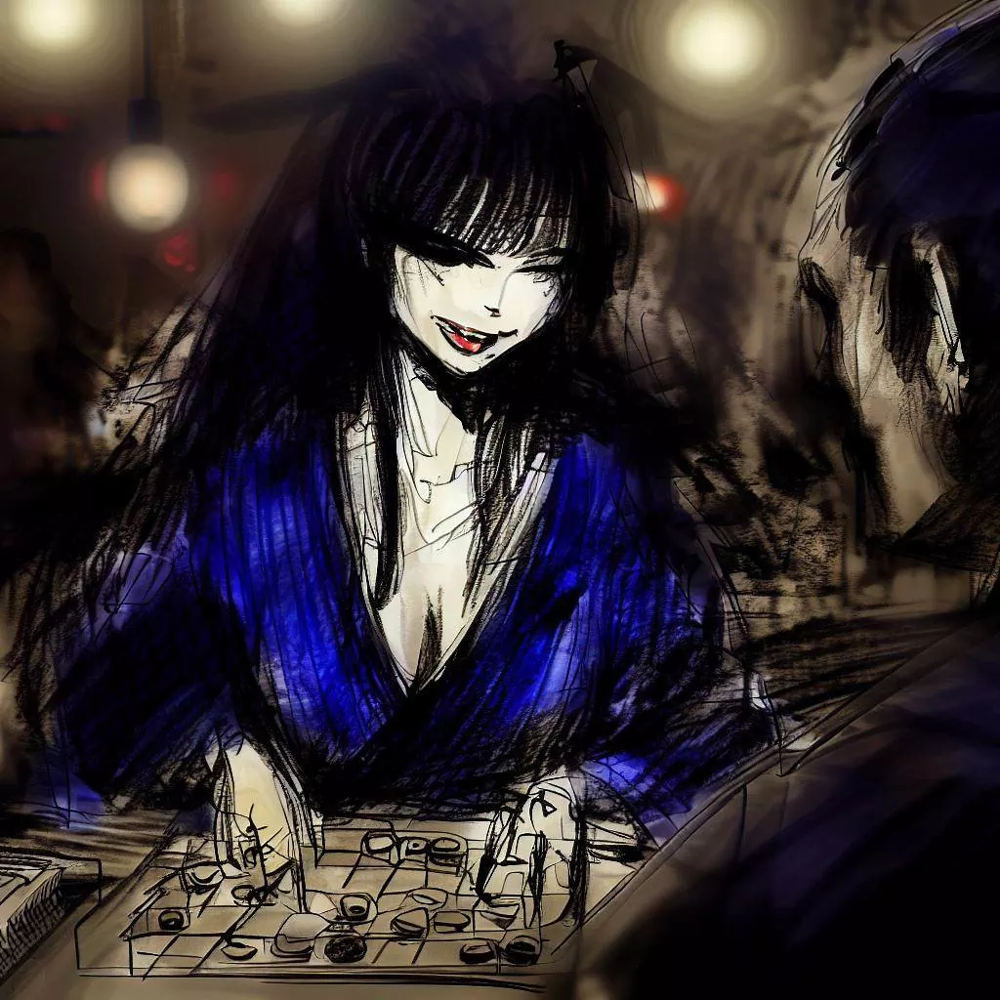

কোমায়ো: ওগি খেলার মিস্টিক প্রতিধ্বনি
আমি কোমায়োকে ধন্যবাদ দিতে চাই। সে আমাকে একটি খুবই আকর্ষণীয় কৌশল খেলা শেখালে। আমি আমাদের মিটিংটি বলব। এটি একটি স্মৃতি যা আমি সত্যিই পছন্দ করি এবং আমি এটি এখানে শেয়ার করতে চাই।
অজানার পথ
দিনটি শেষ হয়ে যাচ্ছে এবং আমি আমার চাকরিটি ছাড়ি। আমি ওসাকায় আছি এবং আমি তাজা সন্ধ্যার বাতাস শ্বাস নিই। শহরটি শান্ত এবং আমি শান্ত অনুভব করি।

আমি রাস্তায় হেটে চলি। ভবনগুলি বড় এবং উজ্জ্বল। তারা রাতে সুন্দর।
আমি একটি জীবন্ত পরিবেশে দিয়ে চলি যেখানে রেস্টুরেন্ট এবং লোকেরা কথা বলছে। যদিও আমি ক
্লান্ত, আমি কিছু আকর্ষণীয় করতে চাই। তারপর, আমি একটি বার লক্ষ্য করি যার নাম রিজেন্সি বার। এটি এমন একটি জায়গা যেখানে লোকেরা সোগি খেলে।
আমি বারে প্রবেশ করার আকাঙ্খা অনুভব করি। আমি একটি চ্যালেঞ্জ গ্রহণ করতে এবং একটু শিথিল হতে চাই।
খেলার বার
আমি রিজেন্সি বারে প্রবেশ করি। এটি একটি শান্ত স্থান যেখানে নরম আলো আছে। এখানের মানুষেরা সোগি খেলছে।
আমি একটি গ্লাস সাকে অর্ডার করি। আমি চারপাশে দেখি। আমি কাঠ এবং আগরবতীর গন্ধ পাই। আমি শোগি পিসগুলি চলাচল এবং মানুষেরা নরমভাবে কথা বলতে শুনি।
সমস্ত বয়সী পুরুষ এবং মহিলারা সোগি খেলছে। তারা তাদের খেলায় সম্পূর্ণরূপে মনোনিবেশ করেছে। তারা প্রতিটি চালে খুশি, দুঃখিত বা উত্তেজিত দেখেছে।
আমি একজন মহিলা দেখি যারা একটি টেবিলে একা বসে আছে। সে সুন্দর এবং শান্ত। আমি তার প্রতি কৌতূহলী। আমি তার দিকে যাই, আমি হাসি এবং আমি তাকে জিজ্ঞেস করি যে সে কি আমার সাথে সোগি খেলতে চায়।

একটি ভিন্ন খেলা
আমি খেলার জন্য অনুরোধ করলে সে হাসল।
সে একটি খেলার বোর্ড বের করল। এটি একটি কাপড়ের নিচে লুকিয়ে ছিল। আমি অবাক হলাম। বোর্ডটি সাধারণের চেয়ে ছোট ছিল। এতে কম বর্গ এবং টুকরা ছিল। সাধারণ সোগির মত এতে 9x9 বর্গ নেই, এতে 8x8 বর্গ ছিল। এছাড়া, প্রতিটি খেলোয়াড়ের জন্য মাত্র 18টি টুকরা ছিল। আমি একটি প্রশ্ন জিজ্ঞাসা করার আগে, সে ব্যাখ্যা শুরু করল। সে বলল এই খেল
াটি ওগি নামে পরিচিত।

সে একটি বিশেষ টুকরা নিয়ে কথা বলল। এটি ছিল প্রিন্সেস টুকরা। সে বলল যে এই টুকরা খেলাটি আরও গতিময় করে তুলেছে। যখন সে আমার অবাকতা দেখল, সে হাসল। তারপর, সে বোর্ডে টুকরা রাখা শুরু করল।
যখন সে টুকরা রাখতে শুরু করল, আমি কিছু ভিন্ন দেখলাম। বোর্ডের কোনায় টাওয়ার ছিল। সে ব্যাখ্যা দিল যে এই টাওয়ারগুলি সাধারণ সোগির ল্যান্সগুলি প্রতিস্থাপন করেছে।
যখন সমস্ত টুকরা বোর্ডে ছিল, আমি খুব উত্তেজিত হলাম। আমি সত্যিই এই নতুন খেলা খেলতে চাইছিলাম। এবং আমি এই রহস্যময় মহিলা সম্পর্কে আরও জানতে চাইছিলাম।
খেলার পরীক্ষণ
ঘড়িটির টিকটিক শব্দ শুনা যাচ্ছে। শান্তি কেবল বোর্ডের টুকরাগুলি চলাচল করার শব্দ দ্বারা ভেঙ্গে ওঠে। টুকরাগুলি নিশ্চিত ভাবে চলাচল করছে। প্রিন্সেস টুকরা খেলাটি নেতৃত্ব করছে। খেলার শান্তি ঘরটি পূর্ণ করে। এটি খুব তীব্র।
মহিলাটি খুব ভালো খেলে। যখন সে আমার কোনও টুকরা ধরে নেয়, সে এটি নিজের টুকরা হিসাবে বোর্ডে ফেরত দিতে পারে। সে প্রতিটি টুকরা প্রতি অনেক গুরুত্ব দেয়। সে আমার জন্য একটি শেখা।
আমি খেলা চালিয়ে যাচ্ছি। আমি আমার টুকরা প্রচন্ড শক্তি দিয়ে চলাচল করি। আমি আমার রাজা রক্ষা করি। কিন্তু প্রতিটি পদক্ষেপের সাথে, আমি আরও ক্লান্ত হয়ে যাচ্ছি। আমার চোখ ভারী হয়ে যাচ্ছে।
সম্পর্কিতভাবে, আমি জেগে থাকতে পারি না। আমি অত্যন
্ত ক্লান্ত। সব কিছু কালো হয়ে যাচ্ছে। আমি শেষ কিছু যা দেখি তা হল মহিলার হাসি। সে খুব খুশি।

একটি অবাক করা জাগরণ
আমি ঘুমিয়ে ছিলাম, অন্ধকারে হারিয়ে গেছিলাম। তারপর, ধীরে ধীরে, আমি জেগে উঠলাম। এটি সকাল। আমি আমার চোখ খুলে। বারটি প্রায় পরিবর্তন হয়নি।
খেলার বোর্ড এখনও সেখানে আছে, গতকালের মতই। কিন্তু মহিলাটি নেই। সে চলে গেছে। তার অনুপস্থিতি একটি শূন্যতা ছেড়ে গেছে। বারটি খুব শান্ত।
আমি খেলার বোর্ডের পাশে একটি কাগজের টুকরা দেখি। আমি কাগজটি নিয়ে আসি। এতে একটি শব্দ লেখা আছে: "ধন্যবাদ"। এবং একটি নাম: "কোমায়ো"। এই নামটি ছিল মহিলার শেষ স্মৃত
ি। আমি তার সাথে একটি অবিশ্বাস্য সন্ধ্যায় কাটিয়েছি, রিজেন্সি বারে ওগি খেলে।